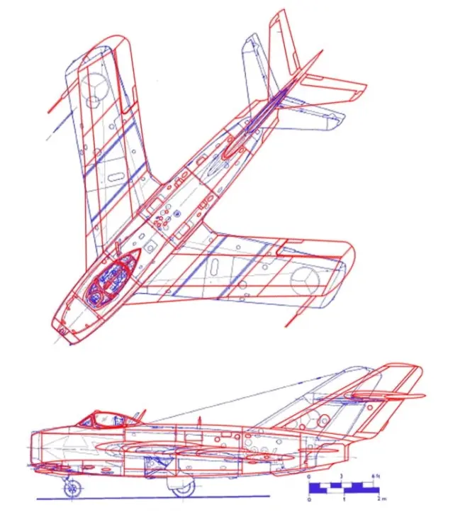

米格-15诞生记（下），一鸣惊人
发布时间：2020-08-19
原作者：Armstrong
搬运地址：空军之翼
UTI教练机
米格设计局接下来推出的是双座教练型——米格-15UTI（“UTI”是俄语战斗教练机的缩写）。该机的研制工作于1949年春季在第1工厂展开，进度飞快，这是因为米格设计团队只获得了大约一个月的研制时间！
紧凑的研制计划自然限制了UTI的改动幅度，仅针对座舱和燃油系统进行了修改。该机座舱区域向后扩展以安装第二张弹射器座椅和第二套飞行操纵装置，因此内油容量有所降低，并且只保留1门23毫米NR-23机炮。名为I-312T的米格-15UTI原型机于1949年5月23日首飞，安装一台2.27吨推力的RD-45F发动机，最大速度1015公里/小时，升限14625米，航程1400公里。
米格-15比斯和米格-15UTI都在1950年开始量产，当年苏联生产了1911架单座型和56架双座型。除第1工厂外，还有其他8家工厂在生产米格-15，分别是第153厂（新西伯利亚）、381厂（列宁格勒）、21厂（高尔基）、31厂（第比利斯）、126厂（科莫索姆斯卡纳姆）、292厂（萨拉托夫）、135厂（哈尔科夫）和99厂（乌兰乌德）。
1951年，米格-15的生产达到历史最高水平，生产出令人难以置信的4033架单座型和450架双座型。该机的生产一直持续到1959年，9家工厂共制造了11000架米格-15，此外其他国家还按许可证生产了大约5000架，全球总产量达到了约16000架。
朝鲜战争
1950年6月25日朝鲜制造爆发，在美国空军F-80“流星”和F-84“雷电喷气”、美国海军F9F“黑豹”喷气式战斗机的压制下，朝鲜人民军空军的拉-9和雅克-9活塞式战斗机很快失去制空权，导致美国空军的B-29轰炸机在朝鲜上空横行无阻。但随着苏联派出米格-15参战，情况开始改变。
1950年11月1日，米格-15获得朝鲜战争中也是人类战争史上首个喷气机之间的击坠，苏联空军第50歼击机航空团的米格-15击落了美国空军的F-51“野马”和F-80“流星”战斗机。
B-29轰炸机也迎来灭顶之灾，米格-15在这方面发挥了其重轰截击机本色，一种特别有效的拦截战术是米格-15机群分成小队上下夹击B-29轰炸机编队。1951年4月12日，包括48架B-29在内的一个美国空军大型混合编队遭遇44架米格-15的拦截，最终被击落击伤10架B-29、3架F-80和一架其他战斗机，米格-15仅损失1架。
关于这种凶猛的新型苏联战斗机的消息很快就在联合国军飞行员中传播，让西方世界感到震惊。时任英国空军元帅约翰·史莱瑟爵士表示“它不仅比我们制造的任何战斗机都快，而且已经大量生产。因此，在至关重要的截击战斗机方面，俄国人已经领先英国四年。”
米格走廊
美国空军在朝鲜的劣势直到1950年12月中旬才得到扭转，能与米格-15匹敌的北美F-86A型“佩刀”战斗机抵达战区。从1950年12月17日开始，两种战斗机在鸭绿江到其黄海入海口上空殊死搏斗，由于美国人始终无法在此获得空中优势，因此将这块空域称为“米格走廊”。
米格-15和F-86A大致旗鼓相当，各自具有优势区域。米格的升限更高（15500米 vs 13700米），爬升率更好，“佩刀”具有更好的俯冲性能和水平机动性。“佩刀”配备了六挺12.7毫米M3勃朗宁机枪，每门备弹300发，火力密度更大，但米格的NR-23和N-37组合威力更惊人。
两种战斗机的性能是如此接近，以至于飞行员的经验和技术会决定每次空战的结果。最终，美国空军声称F-86击落了792架米格-15，损失了78架，交换比10：1，但其准确性一直受到质疑。苏联空军第64歼击航空军称在朝鲜战争中摧毁1106架联合国军飞机。
战争中战绩最高的米格-15王牌是尼古拉·苏佳金大尉，他击落的21架敌机中包括9架F-86、1架F-84和一架“流星”，为此获得苏联英雄勋章，获此勋章的还有其他19名参战苏联飞行员。
米格-17
当米格-15在朝鲜上空一鸣惊人时，米格设计局也在积极研制其后继型，这项工作自1949年就开始了。该机最初被称为米格-15比斯45，将彻底解决米格-15战斗机基本设计存在的缺陷并能以更高的马赫数飞行。
最终被命名为米格-17的新一代战斗机在总体设计上非常类似米格-15，但机翼和尾翼更薄，机翼后掠角大幅增加，内翼段为45度，外翼段为42度。尽管机翼更薄，但米格-17的机翼刚度比米格-15更大，这是为了抵抗翼尖扭曲趋势，这个问题会导致米格-15在高速或高翼载情况下出现左右机翼升力不对称。
其他显而易见的差异还有米格-17每侧机翼上表面有三个翼刀而不是米格-15的两个，更高的垂尾和向后逐渐收细的后机身使米格-17的长度从10.1米增加到11.26米。
早期米格-17使用与米格-15相同的克里莫夫VK-1发动机、前起落架和武器，这些通用性使得I-330原型机能在1950年1月14日首飞，由试飞员伊万·伊瓦申科驾驶。
但在仅3个月后的3月17日的一次试飞中，伊瓦申科就在试飞中遭遇颤振，导致水平尾翼被撕脱，飞机失控坠毁，他本人当场遇难。I-330在试飞中还被发现机翼刚度仍然不足，出现了副翼反操纵，该问题在1951年初首飞的SI-02原型机上得到了解决。
米格-17于1951年9月1日投产。即使是早期非加力型米格-17，与使用相同发动机的米格-15相比其速度也提高了50公里/小时，新机的高空机动性也更好。
由于米格-15仍在大批量生产中，所以米格-17尽管在1951年第三季度就开始交付，但直到1952年10月才开始服役，此时米格-19即将试飞。

米格-17为白天任务进行了优化，配备了一门N-37 37毫米机炮和两门23毫米机炮，还具有根据缴获F-86“佩刀”设备仿制的ASP-4N瞄准具和SRC-3测距雷达。从1953年起，飞行员还获得了带有防护面罩和腿部约束的更安全弹射座椅。
米格-17最重要的型号是1953年推出的米格-17F，“F”表示其VK-1F加力涡喷发动机，具有新型收敛-扩散尾喷管和燃油系统。加力燃烧室使该机爬升速度提高了一倍，虽然米格-17并不是一种超音速战斗机，但熟练的飞行员可以在浅俯冲中突破音障。
尾声
虽然米格-17在苏联空军中的服役时间较短，很快被更先进的米格-19取代，但该机仍成为一种世界级战斗机，在越南战争中大放异彩。
米格设计局成为苏联著名的前线战斗机研发机构，研制出一系列飞行速度更快，影响更深远的型号，而所有这一切都始于无与伦比的米格-15。